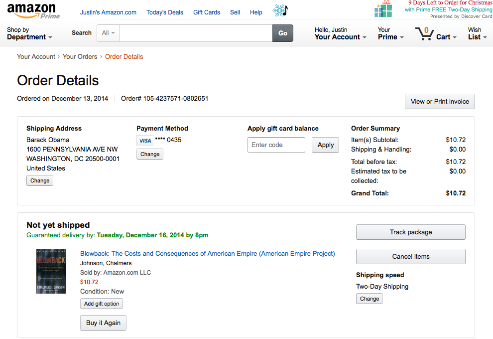

I haven't been able to seriously follow the news since 2007. Seeing worldwide brutality brings me far too close to the two years I spent in Iraq. But I brought myself to read the torture report. A fire burned inside me that I haven't felt in seven years. I knew that if I didn't speak out, I would regret it for the rest of my life. In an emotional fury I wrote a letter to Barack Obama.
While writing it, I was grabbing at my strained emotions and trying to record them as best as I could. I pulled up memories that I haven't allowed myself to recall for a decade. While pouring my heart onto my keyboard, my hope was to inspire empathy. Empathy was my fiercest foe on the battlefield, but it was what saved me in the end. For the majority of my two years in Iraq, I refused to view the Iraqi people as anything but human beings. When we'd kick down someone's door in the middle of the night and search their home, the terror I saw in their eyes - and in the eyes of their children - was projected directly onto my heart. I find that empathy is largely absent from public discourse, and I hope that my words may change that.
My letter is far from being finished. While it may not be in good form to release a work in progress, my conscience could not let me stay silent for another second. The torture report makes it clear that our government is suffering from a lack of accountability. In this work I will show that if these criminals are not held personally accountable for their actions and then brought to justice, then the citizens of the United States will never be able to be saved. I'll also give a precise definition of salvation, and its implications for the citizens of the United States and our leader. It is a fact that criminals must come to justice, regardless of their positions or the power they wield. I hope that through empathy and reason, I can make that truth feel as real to you as it does to me and the rest of the world.
Dear Mr. President,
My name is Justin Thompson. I was a soldier in the US Army from 2002 to 2007. During this time, I spent two years in Iraq as an infantryman supporting Operation Iraqi Freedom. I signed a contract in July 2001 which stated that I would serve from June 2002 to June 2006. While I never agreed with US involvement in Iraq, I served my time (and then some) because I knew that I had a responsibility to the other soldiers in my unit, and to the oath I’d taken. We need to talk about responsibility. But first, I’d like to share a story with you. I’ve never told anyone this story because it is about one of my lowest moments.
Sometime around January 2004, Bravo Company, 5th Battalion, 20th Infantry Regiment was stationed in an abandoned school house on the outskirts of a town near Mosul. It was named FOB Aggies. Close to 150 of us called this place home for about 6 weeks. At this stage in the war - and in our little neck of the woods - Halliburton (or KBR) hadn’t graced us with their presence; there was no MWR center or permanent chow hall, our perimeter was razor wire, and for a while we had to burn our solid waste with diesel (I have pictures). We hired a local Iraqi citizen to set up an internet hotspot for us at Aggies. We knew him as Sadik, which we understood to be Arabic for “friend.” When we weren’t on missions, on guard, or eating, we’d pay 3 or 5 dollars an hour to sit on the computers that Sadik had set up. Sadik and a couple of his buddies would be - by necessity - soldering random computer parts to random router parts to keep everything up and running.
One night we were coming back from a long mission. On the way in, a couple of friends and I heard that Sadik had been selling our information to an insurgent group, or something carrying equal weight. (It’s interesting that I can’t recall exactly why he was charged. I guess I’ve repressed more of this memory than I thought I had.) We’d been out all day, all night, trying not to get blown up or shot. All I wanted to do was come back to Aggies and email my loved ones. When I heard that Sadik had “fucked us,” as army guys say, I felt betrayed.
But there was more to it. I didn’t agree with the war! I felt (and still feel) that the Iraqi people were innocent and were unfortunately caught in the middle of a bloody power struggle. But this sleep-deprived, adrenaline-fueled feeling of betrayal shook that world view. When you spend 24 hours a day knowing that your life could end at any second, your baser instincts slowly start to take over. I was angry and wanted revenge. I thought of all the times I’d overheard one racist soldier say to another, “why do we let that raghead in our FOB,” and was outraged at their ignorance. I’d always felt that Sadik was just another dude caught in the middle of hell, not unlike me and my brethren. I’d always given him the benefit of the doubt. Now I wanted blood.
I’d convinced a couple of my friends (bullies never go alone) to accompany me to the first floor where we kept our detainees. We had to keep the lights out at night. We couldn’t risk our silhouettes being seen from the outside. I entered the first floor where I could see the two guards sitting outside the detainee room. As I walked towards the room where Sadik was sleeping, I passed a stack of MREs and water bottles. I remember the crunch of the plastic in my hand as I squeezed the 1.5 liter bottle in my throwing hand. I said to one of the guards, “so. Is 'Sadik' in here?” One of them kinda chuckled, “yep. Right in there.”
My heart raced as I stepped into the room and flung the bottle into the darkness. “Get the fuck up ‘Sadik’!” My arms were trembling with adrenaline as I walked closer. I kicked his cot and yelled again. Just then, from the other room we heard, “what the FUCK?!” It was 1SG Ray Hernandez, our company First Sergeant. “What the FUCK is going on in here?”
“We heard Sadik fucked us, First Sergeant.”
“That doesn’t give you the right to hurt him! We are American soldiers. It’s not only illegal to fuck him up, it’s not the right thing to do.”
I don’t want to imagine what would have happened if First Sergeant hadn’t been there. I’m certain that if he hadn’t stopped us, I would have done something that night which I would not be able to live with today. I was lucky to have a leader with morals and the courage to stand by them. The next day he made sure that every soldier in the company knew, without a doubt, that mistreatment of any person in our care will not be tolerated. I’ll never get his words right, but he said something along the lines of, “we don’t do that shit to people. The fuckers we’re fighting do that shit. We’re better than that. We have to be the bigger men.” I tried to forget what I did. I tried to tell myself that we were only going to rough him up a little, so what’s the big deal? But I knew that I’d betrayed my own moral code.
A few months later, the world learned about the atrocities at Abu Ghraib. First Sergeant briefed us on what happened. My head started to spin and a harsh static crept over my senses. I could have done that. I could have done worse! And I didn’t even agree with the war! How could I have slipped so low? How could I let my anger take control of my reason? Even today, I’m frightened by my behavior as a young twenty-something. One might argue that my reaction was understandable, given that I was in the middle of a combat zone. Had I abused Sadik, there would be no excuse for my actions. This is because it is wrong to harm to someone who does not pose an immediate threat to you. It’s as simple as that. Regardless of the reasons leading up to my violent behavior, if I had hurt Sadik then I would have to take responsibility for my actions. I don’t want to be a citizen in a society that excuses such primitive, violent behavior.
Now let’s talk about responsibility. The United States willingly tortured people. That is, some people made the decision that we would do physically and psychologically violent acts to human beings in our custody. Those people must be held accountable for their actions. War is a terrible, violent, absurd farce. Keeping ones morals in the face of combat is one of the hardest things that service members have to do. But they do it. They have leaders like Ray Hernandez who reinforce our collective morality in the face of anger and betrayal. All of that work and discipline was for nothing now. You, Barack Obama, are our leader. Hence, it is your responsibility to see that the people who undermined our nation’s values are brought to justice. I don’t see any other way to save our nation’s humanity.
I posted a picture to my Facebook page the other day. It was an image of an income tax form covered in blood with black letters stating “you paid for torture.” I was surprised when a few of my old army buddies responded with comments like, “fine by me.” As time went on I began to see more posts supporting the torture program, images of the twin towers ablaze with bold, white, capital letters, “THIS IS WHY I SUPPORT TORTURE.” This is precisely the mentality that you condone by allowing these criminals to walk free. I don’t think I need to mention how this looks to the rest of the world.
When I joined the army, I was so proud to be an American. After seeing what happened to Iraq during my two years there, I had a hard time saying the words, “I’m proud to be an American.” But I still felt proud somewhere in my heart because I believed that - regardless of the wars we wage and our waining personal freedoms - we were a nation of good people with a strong moral fiber. Now that my government simply will not prosecute these ruthless criminals, I feel betrayed again. I thought we were better than this. Until these people come to justice, the blood of the last 13 years is entirely on the hands of the American people. It is your responsibility as our leader to make this right.
Sincerely,
Justin Conrad Thompson
P.S.
How dare you state, Mr. President, that it’s time to move forward instead of time to prosecute the people responsible for our newest national scar? I’m afraid you can’t change the rules in the middle of the game. When a nebulous organization of “evil doers” performed terrible acts of violence against us, nothing stopped us from getting our pounds of flesh.
We, as a nation, knew about the collateral damage that accompanies a war. Brutal images of Hiroshima and Vietnam are burned into the back of our collective retinas. Our anger and outrage at 9/11 pushed those images to the part of our minds we seldom visit. Our revenge was far more important to us than honest public discourse about the true consequences of combat. Everyone wanted those “evil doers” to pay for what they did and if a few bystanders got hurt along the way, well that’s just war.
We went to Afghanistan. We stayed angry. We went to Iraq. We were still angry. Boy, these “evil doers” are sure hard to stop. A lot of innocent people are dying in the process, but that’s war. That’s the game you wanted to play. I actually voted for you in 2008 because I held a glimmer of hope that you might get us out of the middle east. But in 2004 I knew beyond any doubt that eventually we would pull out of Iraq, and the government we emplaced would fail, leaving a power vacuum in the region. I’m no sage; I simply know my history. (Our record with nation building is pretty abhorrent.) All along the way, innocent people were being harmed and we felt as a nation that our efforts would somehow be worth it. Whether or not these actions were justified can only determined by time. Perhaps if we can manage to turn some distraught middle eastern nation into a democratic paradise, a symbol of hope for the region, then we will be able to wash the blood of the innocent off of our collective hands. I’m not holding my breath.
Now we find out that our government sanctioned terrible acts of violence against human beings. Never mind that some of them turned out to be innocent. The fact is that some people in our government committed terrible acts of violence. How convenient that we’re just now learning to turn the other cheek. Part of playing this game is that you clean up, Mr. President. How about we pursue the criminals who allowed detention site Cobalt to become Dachau with the same fervor as we pursued those faceless “evil doers” for so many years? Are these crimes any less heinous?
No amount of time can ever justify torture. As our leader it’s up to you to see that justice is carried out. Only then can we begin to heal.
And one more thing: what ever happened to Sadik? What methods were used to extract information from him? Was he ever found guilty? Did he rot away in some detention center, or was he proven innocent? I'd really like to know. After my rage calmed down that night, it occurred to me that in my emotional state, I didn't think twice whether or not it was right to take on the roll of Sadik's judge, jury, and executioner. No one in their right mind could justify such actions, but that's precisely what our government's program lead to. Once I had calmed down, the guilt hit me. My rational mind told me that there was a good chance he was indeed innocent. It wouldn't be the first time we got some bad information.
For the last 10 years a lot of scenarios of Sadik's fate have passed through my mind. The most frightening one goes something like this: what if someone framed Sadik? It's not absurd to assume that some insurgent had the technological knowhow to hack Sadik's system and make it look like it was Sadik who was sending the information. Neither can we ignore the possibility that Sadik had an enemy who provided false information to coalition forces in order to get him detained. (Think Salem, late 1600's.)
When these dark possibilities begin to play out in my mind, I used to assuage my guilt by telling myself that leaders like Ray Hernandez would ensure that justice would be done. But after reading the lines of the torture report which weren't blacked out, I have a very hard time convincing myself of this. The scenario continues. Sadik is innocent, but the investigators at the detainee center want to extract as much information out of him as possible. I mean, his servers were sending data to a known insurgent network. And since "enhanced interrogation" techniques are sanctioned by the federal government...
From here, the scenario usually branches into 2 possibilities. Either Sadik is killed or detained indefinitely at some detention center, or - and this is actually the darker of the two possibilities - he is released. Now he wants revenge. I'm not about to sit here and justify Sadik's imaginary decision to take up arms agains coalition forces. I'm just asking you to consider what you would do if you were in this man's shoes. A foreign nation invades your country. You try to help them. You're Shiia. You hate Saddam. You can't wait to be liberated from his oppression. So you help out the good guys and end up getting waterboarded for a misunderstanding. Then they say, "oops. You're not a bad guy. You're free to go." I doubt many Americans would turn the other cheek if this happened to them. Now that I think about it, after we heard about Abu Ghraib during my first tour, I often wondered if any of the incoming fire we received was coming from my old friend Sadik. This is called "blowback," Mr. President. Chalmers Johnson wrote a book about it. I've taken the liberty to send you a copy. Here's the order confirmation. You should have it before Christmas.
Check back frequently, Mr. President. I still have a lot to say.
Here are a few examples of the mentality you're supporting through your inaction, Mr. President. This is how the rest of the world sees us now.
This image claims that firing ones weapon at an enemy on the battlefield is on the same moral footing as keeping a human being who poses no immediate threat awake for up to 180 hours (as per the report). This image does not address the fact that some of those whom we tortured were innocent.
This veteran makes the argument that since our opposition's methods are horrendous, we have the right to act a little less-than-humanely in order to obtain information about how to stop our enemy. It's not hard to see that this leads to the classic "slippery slope." Clearly, force must be used to stop ISIS but at what point does one draw the line? Luckily, the line was already drawn for us.
(Almost) every nation unequivocally agreed long ago that the methods we used in our "torture program" were well beyond that line. We all agreed that these acts were inhumane. Our national trauma seems to have made us forget the principles we used to fight to protect. It's not until after the trauma has healed that people take a step back to observe their actions.
Here we are supposed to feel "un-American" if our empathy for the innocent people we harmed weighs more heavily on our conscience than the actions of extremist thugs. Actually, I may have misread that. Certainly the author wasn't talking about the innocent people we abused. That makes it okay, apparently. (See the comment under the previous image.)
Here's my favorite. This image proves that our national trauma hasn't healed. Our emotions are still too raw. This is why we must go forward as a nation with a clear conscience. Our adrenaline-fueled rage will one day slip away. Believe me; it will. The only way that we will ever be able to face ourselves is if we do the right thing now. We must bring the people who hijacked our common values to justice.
{kind=link}
{kind=link}
{kind=link}
{kind=link}
{kind=link}